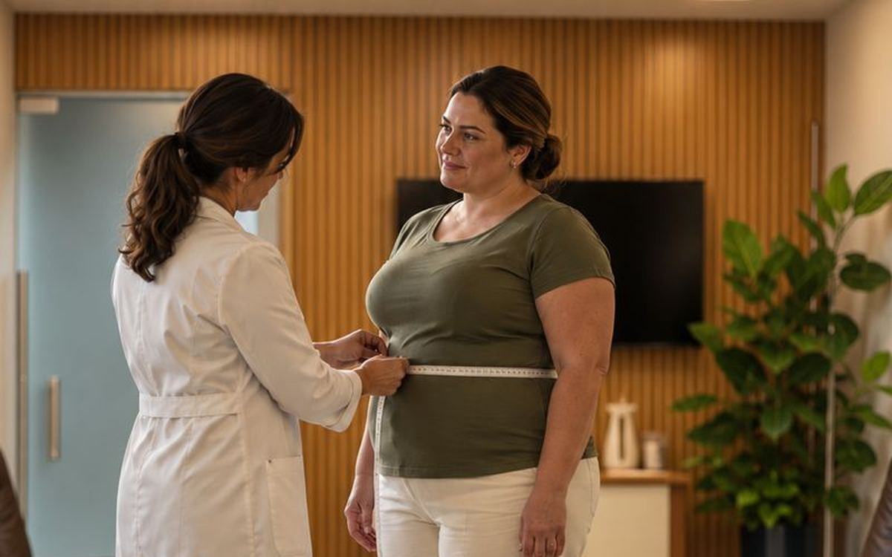

Dr. Guilherme Rocha
Dr. Guilherme Rocha
Por que acontece perda de massa muscular no emagrecimento?
Quando comemos menos energia do que gastamos, o corpo usa gordura, mas também parte da massa magra, que inclui músculos. Em pessoas com sobrepeso ou obesidade, a massa livre de gordura responde em média por cerca de 20% a 30% do peso perdido. Proteína adequada e treino de força reduzem essa perda e protegem a saúde metabólica.
Essa informação costuma surpreender. Muita gente acompanha apenas o número da balança e não percebe que, junto com a gordura, pode estar perdendo força, disposição e estrutura muscular. Uma revisão publicada na Advances in Nutrition estimou essa proporção de massa livre de gordura em pessoas com excesso de peso e destacou que ela pode ser ainda maior em indivíduos com peso normal (Cava, Yeat e Mittendorfer, 2017). O objetivo do tratamento, portanto, vai além de "pesar menos": é mudar a composição corporal na direção certa.
Por que os músculos são tão importantes para quem quer emagrecer?
O músculo é um tecido metabolicamente ativo. Ele participa do consumo de glicose, contribui para o gasto energético em repouso, sustenta articulações e garante autonomia nas atividades do dia a dia. Quando a massa muscular diminui, algumas consequências aparecem com o tempo:
- Queda de força e de capacidade física, com mais cansaço em tarefas simples.
- Menor gasto energético em repouso, o que dificulta a manutenção do peso.
- Pior controle da glicose, já que o músculo é um dos principais destinos do açúcar no sangue.
- Maior risco de sarcopenia, sobretudo depois dos 50 anos.
A sarcopenia é definida pelo consenso europeu como uma doença muscular progressiva, caracterizada principalmente por baixa força muscular, com diagnóstico confirmado pela redução da quantidade ou da qualidade do músculo (Cruz-Jentoft e colaboradores, Age and Ageing, 2019). Ela aumenta o risco de quedas, fraturas e perda de independência, e pode coexistir com a obesidade, situação em que o excesso de gordura disfarça a fragilidade muscular.
Quanta proteína é preciso comer para preservar os músculos?
A proteína fornece os aminoácidos necessários para reparar e manter o músculo. A revisão de Cava e colaboradores sugere, durante o emagrecimento, uma ingestão entre 1,25 e 1,5 vez a recomendação diária habitual para pessoas sedentárias e acima de 1,5 vez para quem se exercita, ressaltando que o excesso também não é desejável (Cava, Yeat e Mittendorfer, 2017).
O valor exato, porém, depende de idade, função renal, nível de atividade, condições clínicas e preferências alimentares. Por isso, a definição da meta proteica e a forma de distribuí-la ao longo do dia são feitas pelo nutricionista, em conjunto com o médico, a partir dos exames e da avaliação individual.
O treino de força ajuda a não perder massa muscular?
Sim, e há boa evidência para isso. Em um estudo randomizado com adultos acima de 65 anos com obesidade em programa de perda de peso, o grupo que fez apenas exercício aeróbico perdeu mais massa magra do que os grupos que incluíram treino resistido. A combinação de aeróbico e força trouxe a maior melhora da função física e da fragilidade (Villareal e colaboradores, NEJM, 2017).
A Organização Mundial da Saúde recomenda, para adultos, atividades de fortalecimento muscular de intensidade moderada ou maior em dois ou mais dias por semana, associadas a atividade aeróbica regular (OMS, 2020). No emagrecimento, o papel do educador físico é ajustar carga, volume e progressão à condição de cada pessoa, respeitando limitações articulares, histórico de lesões e nível de condicionamento.
Como a bioimpedância ajuda a acompanhar a composição corporal?
A bioimpedância é um exame simples e não invasivo que estima quanto do peso corresponde a gordura, massa magra e água. Ela não substitui a avaliação clínica e tem limitações (hidratação, horário e alimentação interferem no resultado), mas, quando feita em condições padronizadas e repetida ao longo do tempo, ajuda a responder uma pergunta essencial: o peso que está saindo é gordura ou músculo?
Com essa informação, a equipe consegue corrigir a rota cedo, reforçando a proteína, ajustando o treino ou revendo o ritmo da perda de peso. Esse cuidado ganha ainda mais importância em tratamentos com medicamentos que reduzem bastante o apetite, como os agonistas do receptor de GLP-1, nos quais a ingestão alimentar pode cair a ponto de comprometer a proteína se não houver acompanhamento. O uso de qualquer medicamento depende sempre de indicação e avaliação médica individual.
- Parte do peso perdido em uma dieta vem da massa magra, incluindo músculo.
- Preservar músculo protege força, gasto em repouso, controle da glicose e autonomia.
- Proteína adequada e treino de força são as estratégias com melhor evidência.
- A bioimpedância seriada mostra se o que está sendo perdido é gordura ou músculo.
Como o Dr. Guilherme Rocha trata o emagrecimento com foco na massa muscular
No Instituto Guilherme Rocha, em Guarapari (ES), o emagrecimento é planejado para priorizar a perda de gordura e a preservação dos músculos. A avaliação inicial com o Dr. Guilherme inclui histórico clínico, exames laboratoriais e análise da composição corporal por bioimpedância, que depois é repetida para acompanhar a evolução.
No Programa Platinum, o médico trabalha ao lado de nutricionista e educador físico, entre outros profissionais, conforme o planejamento de cada paciente, para ajustar proteína, treino e ritmo do tratamento. Para quem convive com obesidade há mais tempo, o tratamento da obesidade segue a mesma lógica: acompanhamento próximo, decisões individualizadas e atenção à saúde como um todo.
Perguntas frequentes
É normal perder músculo ao emagrecer?
Sim, alguma perda de massa magra é esperada quando há déficit calórico, porque o corpo usa diferentes tecidos como fonte de energia. O que se busca é reduzir essa perda ao mínimo. Ingestão adequada de proteína, treino de força regular e um ritmo de emagrecimento compatível com a saúde da pessoa são as medidas que mais ajudam a preservar os músculos.
A bioimpedância é confiável para avaliar a composição corporal?
A bioimpedância oferece uma estimativa útil de gordura, massa magra e água, especialmente quando repetida nas mesmas condições, como jejum, hidratação e horário semelhantes. Ela tem limitações e não deve ser interpretada isoladamente. Na prática clínica, serve para acompanhar tendências ao longo do tratamento, junto com o exame físico, a força e os exames laboratoriais.
Quem usa medicamentos para emagrecer precisa se preocupar com os músculos?
Sim. Medicamentos que reduzem muito o apetite podem diminuir a ingestão de proteína, o que favorece a perda de massa magra se não houver orientação. Por isso, o acompanhamento com nutricionista e educador físico, além da avaliação da composição corporal, é importante. A indicação e o ajuste de qualquer medicamento dependem de avaliação médica individual.
Referências
- Preserving Healthy Muscle during Weight Loss, Advances in Nutrition, 2017. https://pmc.ncbi.nlm.nih.gov/articles/PMC5421125/
- Aerobic or Resistance Exercise, or Both, in Dieting Obese Older Adults, New England Journal of Medicine, 2017. https://pubmed.ncbi.nlm.nih.gov/28514618/
- Sarcopenia: revised European consensus on definition and diagnosis, Age and Ageing, 2019. https://academic.oup.com/ageing/article/48/1/16/5126243
- World Health Organization 2020 guidelines on physical activity and sedentary behaviour, British Journal of Sports Medicine, 2020. https://pubmed.ncbi.nlm.nih.gov/33239350/
Conteúdo informativo, escrito e revisado sob responsabilidade do Dr. Guilherme Loureiro Rocha (CRM-ES 11007). Não substitui a consulta médica. Diagnóstico e tratamento dependem de avaliação individual.